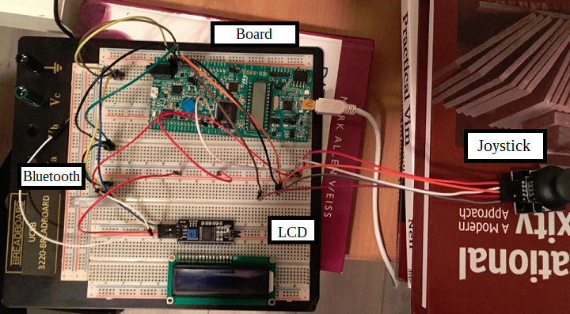

Weekly Updates
Week 7
- 16 February 2021: made home page with project proposal on it
- 18 February 2021: made updates page and partslist page
- 22 February 2021: uploaded photos of parts in partslist page
Week 8
- 28 February 2021: I2C Adapter arrives
Week 9
- 1 March 2021: Decided Pins for Peripherals and made a basic hardware layout:
- HC05 Bluetooth: PA2 = USART2_TX, PA3 = USART2_RX
- LCD1602 Screen: PB6 = I2C1_SCL, PB7 = I2C1_SDA
- Joystick: PA0 = ADC1, PA5 = ADC2, PA1 = SW
- Current Hardware Layout and Wiring:
Week 10
- 9 March 2021: Continued Work on custom driver files for LCD1602 for Discovery Board
Week 11
- 17 March 2021: Discontinued Work on LCD1602, began work on game code and joystick configuration